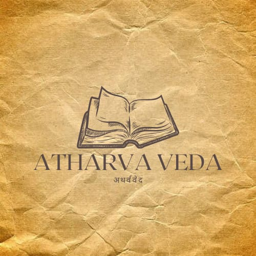

Rig Veda


Yajur Veda
A manual for priests conducting rituals and sacrifices (yajnas). It provides instructions on how to perform ceremonies correctly and includes both prose and verse formulas.
Sama Veda
The Veda of melodies and chants, mainly derived from the Rigveda but set to music. It is considered the root of Indian classical music and is used in devotional singing and rituals.

Atharva Veda
A collection of hymns, spells, and incantations related to everyday life, health, and spiritual well-being. It includes knowledge of healing, protection, and societal rules, making it unique among the Vedas.
Rig Veda
Vibrant collection of Hymns
Yajur Veda
Manual for Sacred Rituals
Sama Veda
Transforms Sacred Chants into musical art.
Atharva Veda
Advice with Mystical Insights